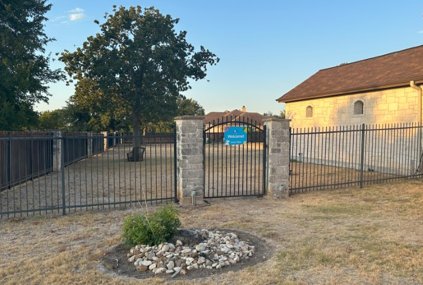

Austin's Inland Beach Guest Guide
Thank you for booking our pool and event space! We are confident you will have a pleasant time. Our goal is that you have a safe and fun time!
Questions? Contact the Hosts
Your hosts will be on-site (but out-of-sight!) for the duration of your visit to see to any needs. We are always open to feedback on your experience.
Below are some instructions to make your visit a breeze.
Index
Waivers
Each participant *must* supply a signed waiver on arrival. This includes even those that do not enter the water. Paper copies are available. You can download the waiver and bring a copy signed in advance. A parent or legal guardian must sign for every minor. Each family may have an adult parent or guardian sign a single waiver to cover the entire family.
If you are throwing a party with children being dropped off, it is YOUR responsibility to see that each child has a waiver signed by their parent / guardian.
Download Waiver
Rules
- No smoking anything, anywhere on the property.
- No headfirst diving. The water is not deep enough for diving.
- No glass on or near the pool deck or in the water.
- No food or drinks in the pool or hot tub.
- No climbing on or jumping from furniture.
- Please play music at a respectful volume level.
- No objects in the water except host-approved pool toys (ex: no rocks, sticks, alligators, etc.).
- No confetti, party streamers, wedding rice, etc. Such things blow into the pool and clog the filters.
- No dumping anything but water into patio drain.
- No pets or non-humans.
Contact the Hosts with any questions or issues.
Parking
Park in either driveway: the semicircular driveway on the north or the side driveway on the east. You may also park on the street, but please prefer the driveways. The east driveway is the most convenient to the gate.
Entrance
Enter through the east gate. There is a blue Welcome sign on the gate. A host will greet you at the start of your booking.
Safety
Obey all pool rules. The rules are for your safety.
Reaching poles are on the back of the wall by the pool pumps.
We urge you to please designate one or more Water Watchers to act as lifeguards. Monitor children at all times. Hand off designation of Water Watcher between adults as needed. Water Watcher wristbands are available on the bar countertop
From safekids.org:
"When children are swimming and there are several adults present, make sure kids are actively supervised at all times by choosing a Water Watcher. A Water Watcher is a responsible adult who agrees to watch the kids in the water without distractions and wear a Water Watcher card. After a certain amount of time (such as 15-minutes), the Water Watcher card is passed to another adult, who is responsible for the active supervision."
A First Aid kit is on the bar countertop.
The hosts are CPR trained. However, they are NOT monitoring your activity. If you need to reach them in an emergency, knock and call into the house loudly after calling 911.
Please remove all water toys from the pool at the conclusion of your swim. Toys in the pool tempt little ones to jump back into the water unobserved.
Water toys are NOT a substitute for life preservers/vests for non-swimmers. Life preservers are not provided.
Hard surfaces can get hot in the sun and slippery when wet. Sandals are recommended.
Additional Guests
All guests of any age must be registered as attendees in the booking, no matter what activities they may participate in and even if they do not enter the pool. This is a requirement of the liability coverage.
You can add guests during your booking with the booking app.
Additional Time
Want to add more time to your booking? Talk to a host. We usually can accomodate extensions if there is no conflicting booking after you.
Bathroom
Enter the house through the door that is left of the east fireplace, at the outdoor kitchen area. Follow the WC signs.
Amenities
See the Amenities page for instructions for each.
Infants / Toddlers
Please use swim diapers for children that are not yet toilet trained. Do not dispose of diapers of any sort in the toilet.
We keep a small emergency supply of swim diapers should you run out.
No Glass
Please do not use glass items (mugs, glass bottles, glass containers, etc.) anywhere around the pool deck or in the pool or hot tub. Decant beverages into metal or plastic containers.
Broken glass is nearly invisible when wet, and very dangerous.
If you break a glass item near the pool deck, we must assume that some glass entered the water, and you will be charged $500 to cover the cost of draining, cleaning, and refilling the pool.
Seating
Here is the provided seating:
- 10 bar stools
- 4 chaise loungers
- 6 dining table chairs
- 2 pool ledge Adirondack-style chairs
- 3 love seats
- 1 3-person couch
- 2 accent chairs
- 6 arrow-back dining chairs (please notify host pre-event if you want these)
- 3 folding camp chairs (please notify host pre-event if you want these)
Total number of adult-sized backsides that can be accommodated: 42
In addition, there are 2 fireplace hearths and the spa surround that can be used as seating.
Feel free to re-arrange the seating in any fashion that suits you. The hosts will take care of putting things back after your event.
Umbrellas
Umbrellas will be set up by the hosts before you arrive. If they are not set up, then the breeze is too strong to safely leave them unfurled. Please do not open them yourself: they can be tricky in the wind.
Forget Something?
Complimentary sunscreen, sunburn gel, and band-aids are available in a basket at the outdoor kitchen area.
Randall's full-service grocery is about 3 miles away. Ice, drinks, food, swim diapers, etc. are available there.
Special Arrangements
If you are interested in such things as a bouncy house, wedding pavilion, your own yard games or activities, a ferris wheel, pony rides, or anything else that strikes your fancy, please discuss with the host at booking time prior to your arrival. Surprise additions upon arrival may not be approved.
Promotions
See the current promotions here
Charitable Causes
We are a not-for-profit endeavor: a minimum of 10% of gross proceeds of all bookings are donated to charity.
How We Clean
The pool is strictly maintained to have pH-neutral, clean, clear, algae-free water. A salt water chlorination generator is used to continually produce chlorine in low (1-4 ppm) concentrations: sufficient to kill all microbial contaminants, but not produce eye or skin irritation.
On the day of your arrival, the pool will have been professionally tested and balanced.
(A pool that smells heavily of chlorine is NOT clean: strong chlorine odor is an indicator of improper chemical balancing and signals the presence of sweat, oils, fecal material, and urine in the water. Eeew. Read more from the CDC on chloramines.)
Upholstery, chaises, and chairs are wiped down prior to your arrival with OxyClean disinfectant. All countertops and cooking surfaces are cleaned with appropriate clensers and are disinfected.
Questions? Contact the Hosts